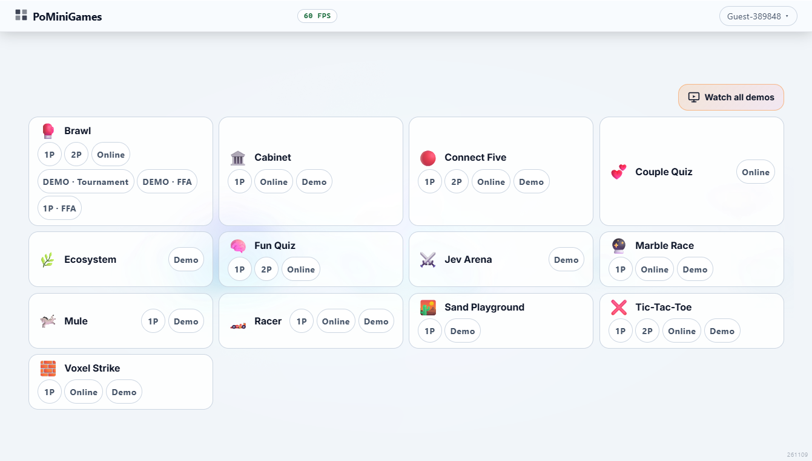
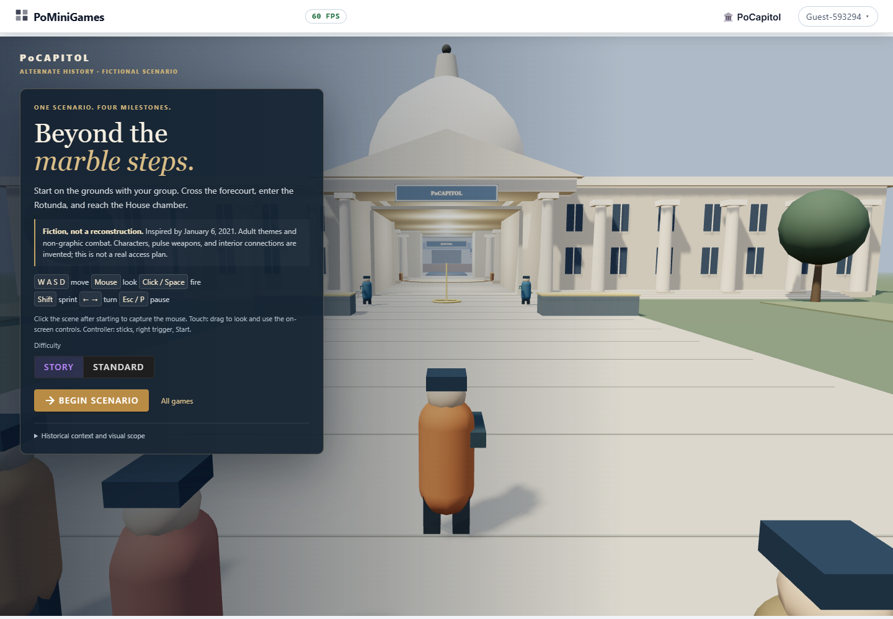

01 / BEFORE - Existing game collection

No PoCapitol experience
The existing hub and games were retained. No Capitol scenario, introduction, or player journey was available.
Actual before-and-after browser captures. A short single-player alternate-history scenario with an exterior, invented interior connections, Rotunda-inspired hall, and House-inspired destination.

The existing hub and games were retained. No Capitol scenario, introduction, or player journey was available.

Shared navigation; explicit fiction notice; Story/Standard setup; four ordered objectives; keyboard, mouse, touch and controller input.
Pause, restart, win/loss and local results. Procedural architecture, not a photorealistic or security-accurate replica.